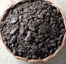
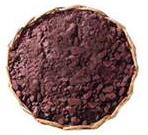
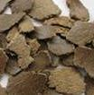
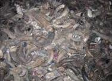
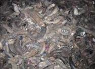

After oil is extracted from oilseeds, the remaining solid portion is dried as cake which can, be used as manure. The oil cakes are of two types:
1.Edible oil cakes which can be safely fed to livestock; e.g.: Groundnut cake, Coconut cake etc., and
2.Non edible oil cakes which are not fit for feeding livestock; e.g.: Castor cake, Neem cake, Mahua cake etc.,
Both edible and non-edible oil cakes can be used as manures. However, edible oil cakes are fed to cattle and non-edible oil cakes are used as manures especially for horticultural crops. Nutrients present in oil cakes, after mineralization, are made available to crops 7 to 10 days after application. Oilcakes need to be well powdered before application for even distribution and quicker decomposition.
  Blood meal when dried and powdered can be used as manure. The meat of dead animals is dried and converted into meat meal which is a good source of nitrogen. Average nutrient content of animal based concentrated organic manures is given as follows.
 

 buy products
buy products